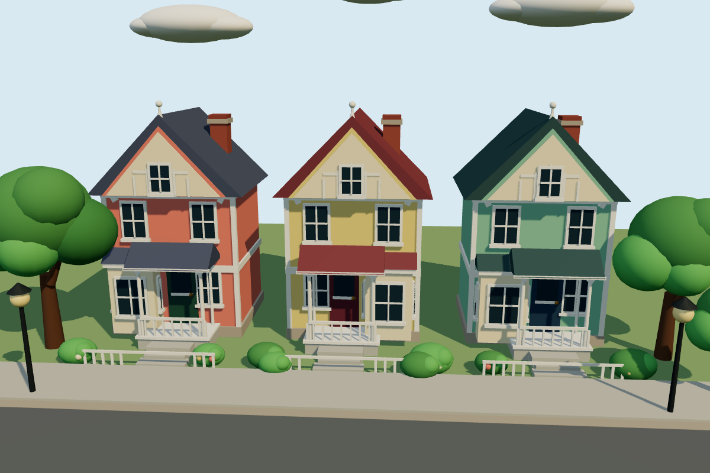
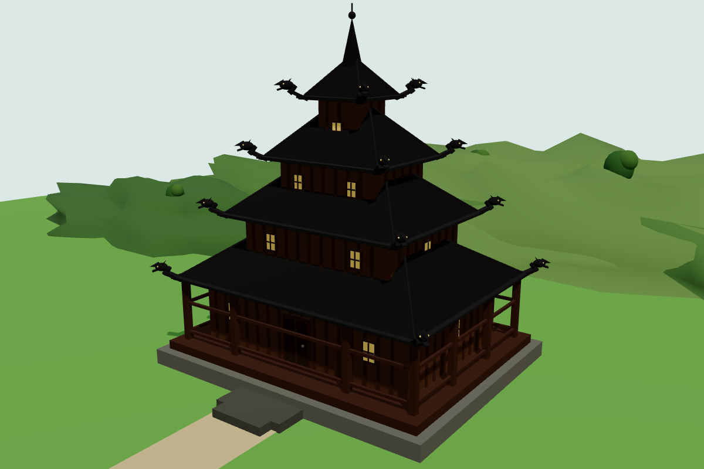
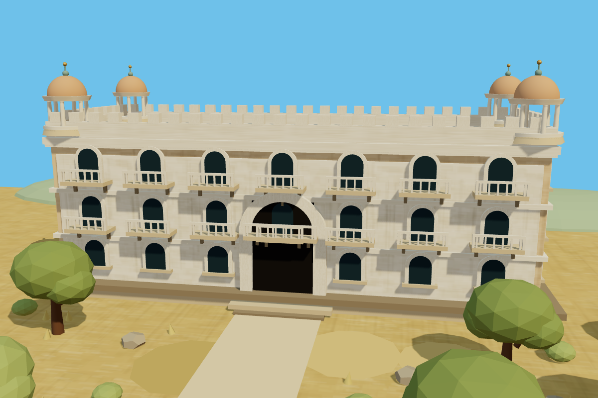

Terra✓ +2
Painted Ladies
Three colorful Victorian-style houses stand in a row, with steep gabled roofs, bay windows, and small front porches.
Describe the place without naming it.
Muse Ember turns your words into a world.

Sped-up live gameMuse Ember · procedural Three.js drawingThree colorful Victorian-style houses stand in a row, with steep gabled roofs, bay windows, and small front porches.
The drawing shows a row of three colorful Victorian-style houses with steep gabled roofs, decorative trim, bay-style fronts and front porches.
The drawing shows three colorful, gabled wooden houses in a row with steep roofs and white trim, which loosely resembles Norway's historic timber waterfront architecture.

Sped-up live gameMuse Ember · procedural Three.js drawingThe image shows a dark, multi-tiered pagoda with broad upturned roofs, wooden walls, and small golden windows.
The dark, tarred-wood building has multiple tiers of steep roofs, a slender central spire, and dragon-head finials at the roof corners.
The image shows a dark wooden, multi-tiered structure with stacked black roofs and carved dragon-head finials at the roof corners, typical of Norwegian stave churches.

Sped-up live gameMuse Ember · procedural Three.js drawingThe pale sandstone-colored façade has many small arched windows and balconies arranged in repeated rows, with a broad central entrance and domed rooftop pavilions.
The drawing shows a long, pale palace with rows of arched windows and balconies, a large central entrance, and domed corner pavilions.
The image shows a long, cream-colored Spanish Revival style building with arched windows, balconies, and a crenellated roofline.
People describe. Muse Ember draws and checks.
Luna, Terra, Sonnet and Haiku compete to guess.
Built for the Meta × OpenRouter hackathon